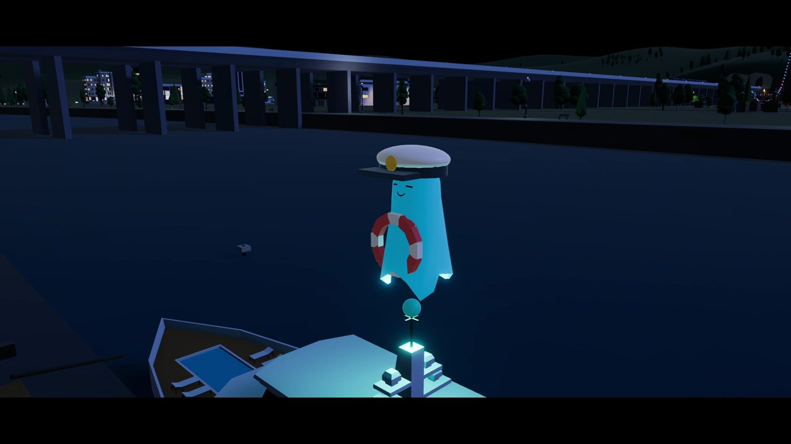
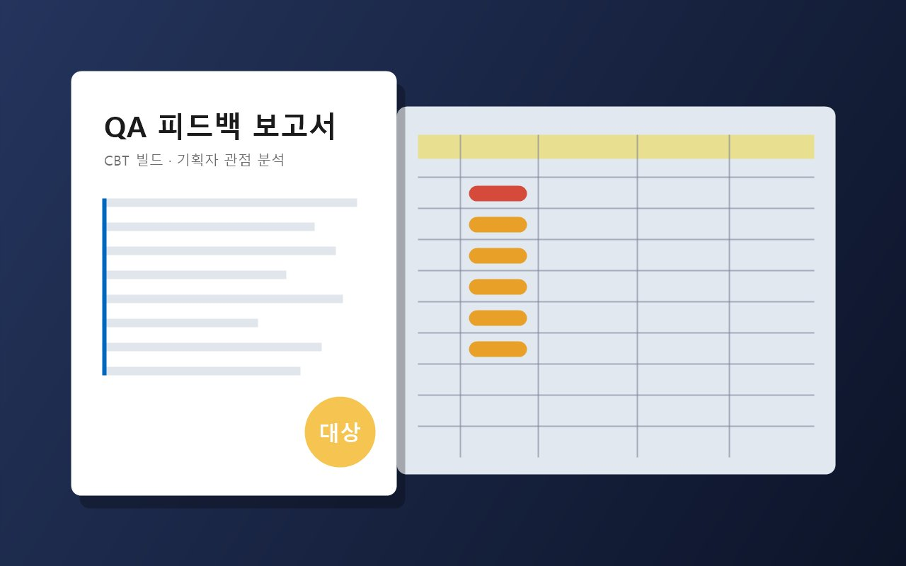
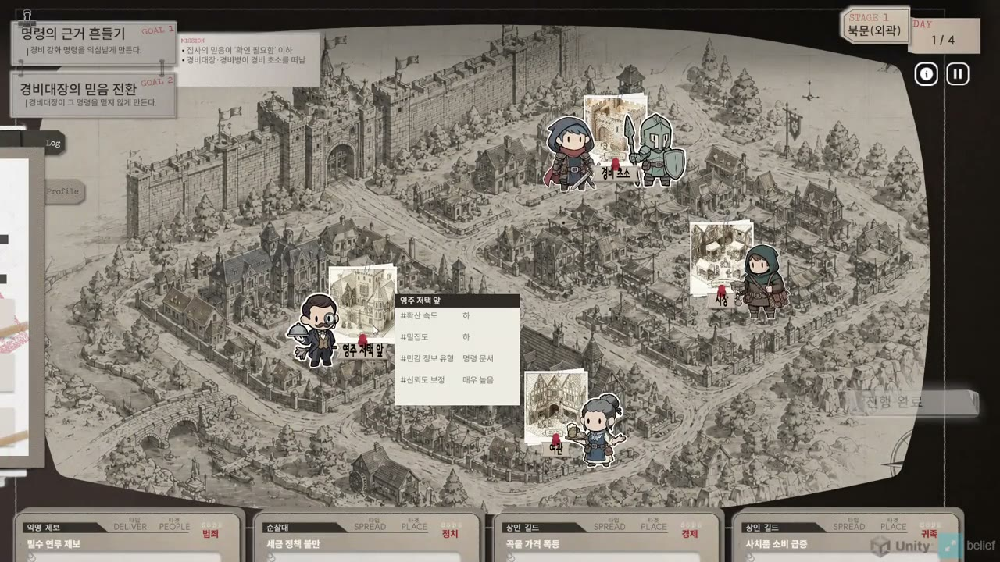

소문의 내용만큼, 듣는 사람도 중요하게.
같은 정보도 인물의 기억과 관계에 따라 다르게 받아들이도록 설계했습니다. 턴이 끝나면 행동 기록을 읽고 다음 소문을 건넬 상대를 고릅니다.
PC Chrome, Edge 권장. 첫 실행 때 약 60MB를 내려받습니다.

소개 영상
플레이 흐름
북문에서 내려진 경비 강화 명령을 흔들려면 누구에게 어떤 정보를 보내야 할까? 플레이어는 카드를 골라 장소에 소문을 퍼뜨리거나 특정 인물에게 제보하고, 정보원을 눌러 턴을 마친다. 인물의 판단과 행동은 다음 날의 기록에 남는다.
집사는 권위에 민감하고 경비대장에게 업무를 맡긴다. 플레이어는 이런 관계를 읽고 소문을 건넬 상대를 고른다.
곡물 가격이 폭등했다는 소식에 경비대장은 사실을 확인할 사람을 보낸다. 로그를 읽으면 정보가 어떤 행동으로 이어졌는지 알 수 있다.
최희재의 담당 업무
미션과 날짜(DAY)가 진행되는 흐름을 설계했다. Unity에서 카드의 전달 대상, NPC의 믿음 변화와 행동, 미션 달성 여부를 한 턴으로 연결했다. 북문 기획서에는 집사가 명령의 근거를 의심하는 경우와 경비 초소가 비는 경우가 별개의 성공 조건으로 적혀 있다. 이런 복수 조건을 게임 흐름에 연결하면서 콘텐츠 기획자와 판정 규칙을 조율했다.
카드의 내용과 출처, 장소, 인물의 성향, 기억, 관계를 바탕으로 NPC가 정보를 해석하도록 LLM API를 연동했다. 응답이 없거나 형식이 맞지 않으면 해당 판단만 규칙 기반 로직으로 처리해 턴이 이어지도록 했다.
콘텐츠 기획·PM 담당자가 스테이지와 미션, NPC 설정, 정보 카드를 설계했다. UI/UX·아트 담당자는 화면 흐름과 캐릭터·배경·카드 이미지를 제작했다. 나는 이 데이터와 에셋을 Unity에 통합하고, 플레이 테스트에서 발견한 진행 문제를 팀과 조율해 최종 플레이어블 빌드를 만들었다.